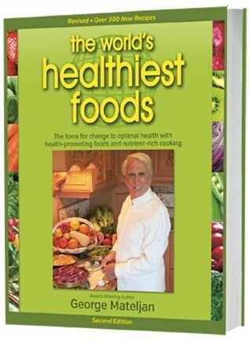

Try our exciting new WHFoods Meal Plan.
Amino acids are best-known as the building blocks for protein, and that reputation is well-deserved. With tens of thousands of proteins in our body—and all of them constructed from amino acids—the protein-related role of amino acids is definitely critical in support of our health (and especially the health of our immune system). Yet amino acids are also direct participants in our nervous system, detox system, and digestive system. You will find information about all of these amino acid functions and benefits in this profile. Importantly, you can also find milligram amounts for 18 different amino acids in all 100 of our food profiles by clicking on the in-depth nutritional profile link toward the end of each food profile. We do not currently rank our WHFoods based on individual or combined amino acid content. However, you will find recommended food sources for different types of amino acids (including branched chain, sulfur-containing, aromatic, and others) in the Summary of Food Sources section of this article.
No group of nutrients is more challenging to describe than amino acids! While some people may take this group for granted and assume that it involves interesting but unnecessary details related to protein, and while others may imagine it as a very specialized area related to body building and physical performance, amino acids are actually spotlight nutrients that all of us would do well to consider when making routine food choices.
Amino acids are most commonly described as the building blocks of protein. There are tens of thousands of unique proteins in our body, and every one of these proteins is constructed from amino acids. It does not matter whether a protein is very small and contains several dozen amino acids, or very large and contains more than 10,000 amino acids, or just average-sized and composed of 200-300 amino acids. It still consists of amino acids that have been combined together in a unique way. This relationship between amino acids and proteins has been the driving force behind nutritional research on these fascinating nutrients.
However, there is a bigger picture with respect to amino acids, and this bigger picture is also important to understand. Amino acids that are used to make proteins are referred to as "proteinogenic" amino acids. Twenty core amino acids are all that it takes to make every single protein in our body. The list below shows all 20 of these core protein-building amino acids in alphabetical order.
The method that scientists have used to determine the protein-building role of these 20 core amino acids involves our genetic code. Within our genes can be found direct instructions for making all 20 of these core protein-building amino acids.
In addition to these 20 core amino acids, there are three additional amino acids that can be used by our bodies to make proteins. However, the direct instructions for making these three additional amino acids are not contained within our genes. The three additional protein-building amino acids are selenocysteine, pyrrolysine, and N-formylmethionine.
What's perhaps most surprising about these 23 protein-building amino acids is the fact that they only account for about 2% of all amino acids. Researchers estimate that an additional 750-1,000 amino acids are present in living things and are routinely used for a wide variety of purposes not related to the building of proteins. Some non-protein building amino acids have been well-researched from the standpoint of metabolism, but less well investigated from the standpoint of food. They include amino acids like ornithine, citrulline, canavanine, and GABA. We expect non-protein building amino acids to become the subject of increased research attention in future studies on foods and meal planning.
If you are starting to conclude that amino acids are somewhat like a jigsaw puzzle with many pieces that can be difficult to fit together into a coherent picture, then you are arriving at the same conclusion as many nutrition researchers! When making nutritional recommendations for our everyday diet, health scientists have expressed much more confidence in estimating our total protein needs than in estimating our need for individual amino acids.
Part of the difficulty in determining our need for individual amino acids involves the interconversion of amino acids that is constantly taking place in our body. Thanks to the remarkable nature of our metabolism, our bodies can create some amino acids from scratch. They can take some amino acids and convert them into others. For example, our body can take phenylalanine (Phe) and convert it into tyrosine (Tyr). It can also take serine (Ser) and convert it into glycine (Gly), and also into cysteine (Cys).
The creation and transformation of amino acids by our metabolism makes it even more difficult to determine exactly what amount of each individual amino acid we need. This added difficulty takes place for two reasons. First, even though our metabolism can take phenylalanine and convert it into tyrosine does not mean that it is actually going to do so. For example, this particular amino acid conversion requires the presence of a folate-related molecule called tetrahydrobiopterin, and if this molecule is not available, the conversion cannot occur. Second, researchers know that the ability of our body to create and transform amino acids can change at different stages of life and also in the face of very slowly developing chronic health problems like very gradual loss of blood sugar control.
One method used by researchers to help simplify amino acid recommendations has been to divide up protein-building amino acids into three basic categories: dispensable, indispensable, and conditionally indispensable. (The previous terms used to describe these categories were essential, nonessential, and conditionally essential.)
Dispensable amino acids are amino acids that our bodies are able to make under virtually all circumstances. Indispensable amino acids can never be made by our body and must be consumed through diet. Conditionally indispensable amino acids are amino acids that can be made by our body under many circumstances, but under other circumstances, cannot be made in a sufficiently reliable way to meet our needs. As shown in the chart below, all of our 20 core protein-building amino acids can be divided up and placed in one of these three categories.
| Indispensable | Dispensable | Conditionally Indispensable |
|---|---|---|
| Histidine | Alanine | Arginine |
| Isoleucine | Asparagine | Cysteine |
| Leucine | Aspartic acid | Glutamine |
| Lysine | Glutamic acid | Glycine |
| Methionine | Serine | Proline |
| Phenylalanine | Tyrosine | |
| Threonine | ||
| Tryptophan | ||
| Valine |
At WHFoods, we believe that this approach to amino acids is best used as a general guideline rather than a blueprint. As you can see, only 5/20 protein-building amino acids (25%) are classified as dispensable, and the other 75% (15/20) are either mandatory to consume from food or sometimes mandatory (depending on the circumstances). Since most of us will not know enough about our day-to-day health circumstances to make decisions about conditionally indispensable amino acids, our only reliable approach will be to make sure we get plenty of all 15 amino acids in these two categories. In short, there do not turn out to be many amino acids that we can ignore when thinking about this key group of nutrients. In our Summary of Food Sources section, we will provide you with practical steps that can help you get ample amounts of amino acids in all three categories.
For more than fifty years, nutrition researchers have deliberated over the idea of "protein quality" and established various guidelines for achieving it. In its simplest form, the idea of protein quality refers to the mixture of amino acids found in any protein-containing food. A desirable mixture of amino acids is regarded as making a protein "high quality," and an undesirable mixture is regarded as making it "low quality." However, determining the amino acid mixture that is most desirable has always been—and still remains—an issue of debate.
There is one group of people for which the most desirable mixture of amino acids has never been controversial, and that group is infants. Nutrition researchers have always regarded the protein content of human milk as having the most desirable amino acid mixture for this group. And it has been relatively easy for researchers to determine the special mixture of amino acids in this food as shown in the chart below.
| Amino Acid | Milligram per Gram of Protein |
|---|---|
| Tryptophan | 17 |
| Histidine | 21 |
| Methionine+Cysteine | 33 |
| Threonine | 44 |
| Isoleucine | 55 |
| Valine | 55 |
| Lysine | 69 |
| Phenylalanine+Tyrosine | 94 |
| Leucine | 96 |
There are three important features to notice about this chart. First, it only contains nine amino acids (or amino acid combinations). When considering protein quality, no amino acids are typically considered except for those amino acids which are classified as indispensable. (Only nine amino acids fall into that category.) Second, "methionine + cysteine" and "phenylalanine + tyrosine" are listed in sets of twos. That's because our bodies can convert methionine into cysteine and phenylalanine into tyrosine.
Finally, it is important to note that all of the indispensable amino acids listed in this chart are provided by a single food: human milk. When an infant is nursing, protein quality is taken care of through the process of breastfeeding (assuming reasonably good health on the part of the mother). No other foods are required.
For adults, however, protein quality is provided through a variety of foods, and this variety makes the most desirable mixture of amino acids more difficult to determine. One common approach taken by nutrition researchers has been to select a single protein-rich food and use its amino acid mixture as a model for protein quality. The most common foods chosen in this context have been a hen's egg and cow's milk. Using an egg as their model for the most desirable amino acid mixture, researchers at multiple universities throughout Canada have recently used a new method for analyzing amino acid requirements called Indicator Amino Acid Oxidation (IAAO), and they have come up with the following proposed desirable mixture of amino acids for adults.
| Amino Acid | Milligram per Gram of Protein |
|---|---|
| Histidine* | -- |
| Tryptophan | 4 |
| Methionine (without cysteine) | 13 |
| Threonine | 19 |
| Lysine | 37 |
| Isoleucine | 42 |
| Valine | 47 |
| Phenylalanine (without tyrosine) | 48 |
| Leucine | 55 |
Values obtained from: Elango R, Ball RO, and Pencharz PB. Recent advances in determining protein and amino acid requirements in humans. Br J Nutr. 2012 Aug;108 Suppl 2:S22-30. * Histidine recommendations not determined.
Let's take this proposed mixture of amino acids one step further, and see how it applies to a meal plan with the DV level for protein of 50 grams. The chart below shows the target level for each indispensable amino acid for any meal plan which contains 50 grams of total protein.
| Amino Acid | Milligram per 50 Gram of Protein |
|---|---|
| Histidine* | -- |
| Tryptophan | 200 |
| Methionine (without cysteine) | 650 |
| Threonine | 950 |
| Lysine | 1,850 |
| Isoleucine | 2,100 |
| Valine | 2,350 |
| Phenylalanine (without tyrosine) | 2,400 |
| Leucine | 2,750 |
Based on values obtained from: Elango R, Ball RO, and Pencharz PB. Recent advances in determining protein and amino acid requirements in humans. Br J Nutr. 2012 Aug;108 Suppl 2:S22-30. * Histidine recommendations not determined.
Remembering that there are 1,000 milligrams in 1 gram, you can see from this chart that most indispensable amino acids are needed in amounts of approximately 1-3 grams in a meal plan providing 50 grams of protein. In our Summary of Food Sources section, we will be showing you how these recommended amounts of amino acids can be obtained in any meal plan based on our WHFoods.
You will notice that the chart above makes amino acid recommendations based on grams of protein consumed in the diet. This basis for making amino acid recommendations was the same approach used by the National Academy of Sciences (NAS) in 2002 when they established their initial guidelines for amino acid intake. However, in 2005, the NAS decided to change their basis for making amino acid recommendations. Instead of making recommendations based on grams of protein intake, they decided to base their amino acid recommendations on kilograms of body weight. (In our Public Health Recommendations section below, we actually provide you with all of the 2005 NAS recommendations for amino acids based on body weight.) While there are measurable differences between amino acid recommendations based on grams of protein intake versus human body weight, we believe that the results from these two approaches are more similar than different, and so we have incorporated both approaches into this amino acids profile. Most of our practical food examples are based on total grams of protein intake. However, in our Public Health Recommendations section, we provide you with a full set of amino acid recommendations based on human body weight as well.
Before ending this Basic Description section for amino acids, we would like to add one final note about protein quality. In the late 1960's and throughout the 1970's, one very popular approach to addressing the issue of protein quality was generally referred to as "food combining" or "protein combining." In this approach, the goal was to combine protein-containing foods on a meal-by-meal basis in such a way as to provide recommended amounts of all indispensable amino acids. This approach was often described as being especially desirable for vegetarians or strict vegetarians who consumed mostly plant foods and did not regularly consume meats, poultry, or fish. For example, strict vegetarians might be advised to combine beans with rice in order to meet their indispensable amino acid needs during a meal. Since the time period in which protein combining was first proposed, research studies have cast considerable doubt on the necessity of obtaining optimal amounts of all indispensable amino acids at any given meal, or for that matter, on any given day. Instead, intake of indispensable amino acids over a period of several days appears to be more important for maintaining body pools of these key nutrients.
As described much more fully in our nutrient profile for protein, it is impossible to find a body system that does not rely on protein for healthy functioning. Not only do all of our cells require proteins to exist, but metabolic activities throughout the body require enzymes to proceed and these enzymes are always proteins.
However, amino acids provide us with extensive health benefits in and of themselves. In other words, even when amino acids are not combined together in the form of proteins, they still play key roles in support of our health. In this Health Support section, we're going to take the same approach for describing amino acid health benefits that we will be using in our upcoming Summary of Food Sources section. We're going to describe the health benefits of indispensable amino acids by dividing this group of nutrients up into four categories: (1) Branched-chain amino acids, (2) Sulfur-containing amino acids, (3) Aromatic amino acids, and (4) Other indispensable amino acids.
The branched-chain amino acids (BCAAs) include isoleucine (Iso), leucine (Leu), and valine (Val). While most of our nutrition research on BCAAs comes from animal studies in which animals were given BCAAs in supplement form, the potential health benefits from these amino acids—in addition to their role in protein-building—seem substantial. BCAAs clearly play a role in blood sugar regulation, and have been shown to improve insulin resistance in animal studies. BCAAs have also been shown to help assure development of mitochondria (energy-producing structures) in heart muscle and skeletal muscle. In addition, they appear able to help lower risk of oxygen-based damage to cells over the course of aging, and to improve physical endurance over the course of aging as well. Once again, these research findings have typically involved research on mice or rats given BCAA supplements rather than human participants consuming BCAA-rich foods. But we look forward to follow-up studies in this area that may go further in confirming these health benefits. For practical information about increasing your BCAA intake, please see our Summary of Food Sources section.
While methionine (Met) and Cysteine (Cys) are the only amino acids listed in our indispensable/conditionally-indispensable amino acid charts, they are actually not alone in the sulfur-containing amino acid category. Joining Met and Cys in this category are the amino acids taurine (Tau), homocysteine, (Hcy) and s-adenosyl-methionine (SAM). Together, this group of sulfur-containing amino acids play a critical role in our cardiovascular health, in the ability of our body to detoxify potentially harmful substances, and in balanced availability of B-complex vitamins. From our perspective at WHFoods, the role of Met and Cys in our body's detoxification processes is especially important. When our body is attempting to transform and eliminate potentially toxic compounds, it often relies on a cellular process that has two steps, referred to as Phase 1 and Phase 2 of detoxification. During Phase 1, potentially toxic, fat-soluble compounds are activated to make them more chemically reactive. During Phase 2, our body hooks specific molecules onto these activated compounds, enabling them to be excreted from the body.
You will not find any molecules that are more important in Phase 2 detoxification than Met and Cys. These sulfur-containing amino acids support detoxification in two ways. As reflected in its name (methionine), Met is a pivotal molecule in our body's methylation system. This system makes certain that there are enough molecules called methyl groups available through the body. Methyl groups are critical in Phase 2 detoxification, because many potential toxins must be methylated before they can be eliminated from the body. Examples of substances that require Phase 2 methylation include arsenic, lead, mercury, and polycyclic aromatic hydrocarbons (PAHs) that are found in car exhaust fumes, cigarette smoke, or smoke from the burning of wood or coal.
Cys is also critical in our body's detoxification system. This sulfur-containing amino acid occupies a pivotal place in formation of glutathione (GSH). Within our body's detoxification system, a wide variety of potential toxins must be hooked up with GSH in order to be eliminated from the body. Pesticides like atrazine and grain fumigants like methyl bromides are examples of potential toxins that must be linked up with GSH. (When GSH is linked up with these potential toxins during detoxification, the process is referred to as mercapturation.) GSH consists of three amino acids: glutamic acid (Glu), glycine (Gly), and cysteine (Cys). However, among these three amino acids in GSH, Cys plays a more central role. We would also like to note that GSH is a premier antioxidant in the body's system for balancing oxygen-related chemical reactions, and heavily relies on Cys for its antioxidant capacity. Equally important, Met and Cys and Tau have all been shown to provide us with valuable antioxidant benefits in their own right.
Within this category of aromatic amino acids you will find tryptophan (Try), phenylanaline (Phe), tyrosine (Tyr), and histidine (His). Since Phe can be converted into Tyr under certain circumstances, Tyr is classified as "conditionally indispensable." (In keeping with this relationship between Phe and Tyr, you will find some health research focusing only on Phe, while other studies focus equally on both Phe and Tyr. His is classified as an indispensable amino acid, and scientists have studied the ability of many plants to produce His. Researchers also know that many bacteria can produce this amino acid. However, it's not clear how much of our need for His might be provided by intestinal bacteria, nor is it clear about the relationship between His, its fellow amino acids, and proteins in general. (For example, His is the only indispensable amino acid that does not appear to impair protein synthesis or negatively impact nitrogen balance when it is deficient in the diet.)
Try, Phe, and Tyr are best-known for their role in the nervous system. Specifically, certain cells in our nervous system can take Try and convert it into serotonin (and melatonin), and other cells can take Phe and Tyr and convert them into norepinephrine and epinephrine. Serotonin, melatonin, epinephrine, and norepinephrine all function as messaging molecules in the nervous system (called neurotransmitters). These messaging molecules relay nerve signals throughout the body. Serotonin and melatonin send messages related to experiences that include relaxation, sleep, and moods. Epinephrine (also known as adrenaline) and norepinephrine (also known as noradrenaline) send messages related to "fight or flight" types of experiences involving stress, fear, heightened awareness, and emergency-type action. You may also hear these neurotransmitters being referred to as hormones since they circulate around our bloodstream and have important consequences throughout the body.
The amino acids are especially important to consider in this category of other indispensable amino acids: lysine (Lys) and Threonine (Thr). Lys is especially important for genetic processes that take place in the cell nucleus. Part of these genetic events require the "packaging" of DNA into a form called chromatin. Numerous chemical components are required for formation of chromatin, and some of these components cannot be correctly produced without the involvement of Lys. In the case of Thr, there appears to be a close link between healthy dietary intake of this amino acid and proper protection of our intestinal lining. Mucins are gel-like substances secreted by cells that line our intestine, and they act as a kind of barrier in protection of those cells. Thr plays a unique role in the synthesis of mucins, and when Thr is deficient in the diet, production of mucins can also become deficient.
It's also important to note, however, that overproduction of mucins can be equally or even more problematic, since this type of imbalance has been associated with increased risk of certain cancers. However, we are not aware of any research showing possible connections between excessive dietary intake of Thr and increased risk of any cancer.
When considered as a group, amino acids clearly play an important role in energy production throughout the body. In order to understand this role of amino acids, it is important to think about them in a different context than the context described above involving sulfur-containing amino acids, branched-chain amino acids, and aromatic amino acids. For understanding the role of amino acids in energy production, it is important to focus on the way they can be broken down by the body. This breakdown of amino acids only happens in two ways. First, amino acids can get broken down in such a way that our body ends up turning them into blood sugar (glucose). When amino acids are broken down in this way, they are referred to as "glucogenic." Second, amino acids can be broken down in such a way that our body ends up turning them into blood ketones. When amino acids are broken down in this way, they are referred to as "ketogenic." Ketones are well-studied in the context of starvation, severe carbohydrate restriction, and prolonged fasting, where they clearly play an important role in providing energy to certain body organ systems, including the heart and the brain. However, the role of ketones in everyday health (where a balanced and healthy diet is being consumed) is not well understood. Below is a chart showing the glucogenic and ketogenic amino acids. As you will see in the chart below, some amino acids can function in both ways when they are broken down in the body.
| Glucogenic Amino Acids | Ketogenic Amino Acids | Conditionally Amino Acids That Can Be Both Glucogenic and Ketogenic |
|---|---|---|
| Alanine | Leucine | Isoleucine |
| Arginine | Lysine | Phenylalanine |
| Asparagine | Tyrosine | |
| Aspartic acid | ||
| Cysteine | ||
| Glutamic acid | ||
| Glutamine | ||
| Histidine | ||
| Methionine | ||
| Proline | ||
| Serine | ||
| Threonine | ||
| Valine |
At the very outset, it is important to remember that all protein-containing foods contain amino acids because amino acids are the building blocks used to make proteins. For this reason, you can usually count on a protein-rich food to provide you with a good number of amino acids. This rule would definitely apply to any WHFood that ranks as a good, very good, or excellent source of protein.
At the same time, however, a food can be low in total protein and still contain a valuable amount of one or more amino acids. Bell peppers, for example, don't rank as a good, very good, or excellent source of protein in our WHFoods rating system, but they would still be considered a valuable source of the amino acid cysteine. (Our in-depth nutritional profile for bell peppers show them to contain 20 milligrams of cysteine in a 28-calorie, one-cup serving.)
When considering food sources of indispensable amino acids, we believe it is helpful to break them down into the following four categories: (1) Branched-chain amino acids, (2) Sulfur-containing amino acids, (3) Aromatic amino acids, and (4) Other indispensable amino acids. The chart below shows how specific amino acids fit into these four categories (The * in the chart denotes that these amino acids aer conditionally indispensable.)
| Branched-chain amino acids (BCAAs) | Sulfur-containing amino acids (SAAs) | Aromatic amino acids | Other indispensable amino acids |
|---|---|---|---|
| Isoleucine | Methionine | Histidine | Lysine |
| Leucine | Cysteine* | Phenylalanine | Threonine |
| Valine | Tyrosine* | ||
| Tryptophan |
With this chart in mind, let's take a look at your best food options in each of these four amino acid categories.
Branched-chain amino acids (isoleucine, leucine, and valine) tend to be most concentrated in fish, eggs and dairy, sea vegetables, and soy foods. Interestingly, our need for total BCAAs may fall into the range of 7 grams per 50 grams of protein—the highest total among our four categories. It would take about 8 ounces of tofu, cod or shrimp to provide you with this total from any one of these foods. One cup of grass-fed yogurt would provide you with about 25-33% of this amount, as would one ounce of grass-fed cheese.
As reviewed earlier, protein quality recommendations for sulfur-containing amino acids are sometimes based on combined intake of methionine+cysteine, and sometimes based on intake of methionine alone (since methionine can be converted by the body into cysteine under certain circumstances). We like the idea of getting both sulfur-containing amino acids in your meal plan. The target goal described earlier for meal plan providing 50 grams of protein established 650 milligrams of methionine as the recommended daily amount. From our perspective, it would not be a bad idea at all to obtain this 650-milligram level for methionine, and to get a substantial amount of cysteine as well. You could accomplish this goal with a single serving of many fish. Let's take salmon as an example. A single 4-ounce serving of salmon provides you with 790 milligrams of methionine and 280 milligrams of cysteine. A one cup serving of most legumes will provide you with about half of your daily requirement for sulfur-containing amino acids. From the nuts and seeds category, you will get about 25% of your daily requirement from a single 2-ounce serving. It is worth adding an additional note here about plant foods that are rich in sulfur compounds, while not quite as rich in sulfur-containing amino acids. Sulfur-rich plant foods can still make great additions to your health, even if their sulfur is not primarily found in their amino acids. Foods belonging to this category would include allium vegetables like garlic, onions and leeks and cruciferous vegetables like broccoli and Brussels sprouts.
In this aromatic amino acid category we will focus on two particular amino acids, namely, phenylalanine and tryptophan. These aromatic amino acids are especially important in helping our nervous system function properly, since they are the basis for making key messaging molecules used to send signals in our nervous system. In a meal plan providing 50 grams of protein, the target level for these two aromatic amino acids is very different, however. For phenylalanine, the recommended intake about is 2,400 milligrams. By contrast, the recommended amount for tryptophan is only 200 milligrams.
Let's take tryptophan first. You'll be getting about 50% of your daily tryptophan from one serving of nuts or seeds; about 30% from a serving of whole grains; and about 15-25% from one serving of many vegetables. If you move over into the dairy and eggs category, you will find one cup of grass-fed yogurt to be providing you with about 20% of your daily tryptophan and one egg or one ounce of cheese to contain about 40%. One cup of beans or 4 ounces of tofu will get you over the 100% level. Four ounces of salmon will provide you with 150%, and 4 ounces of chicken will contain over 200%. So as you can see, there are a wide variety of different ways for you to get plenty of this indispensable amino acid.
With a target goal of 2,400 milligrams, phenylalanine will be more challenging. Let's start with the easiest combinations first. Approximately 40-50% of this amount will be provided by four ounces of most fish and most meats. One serving of most legumes will get you one third of the way there. For example, you will get 820 milligrams in one cup of black beans, and 870 milligrams in four ounces of tofu. Roughly 15% of your daily requirement can be provided by one serving of most nuts and seeds. The going rate of phenylalanine for most vegetables is approximately 5% per serving. So let's say your meal plan for the day includes one serving of tofu, two servings of nuts and seeds, and five servings of vegetables. That combination should put you very close to the place you need to be for meeting your phenylalanine needs.
There are two remaining amino acids that need to be accounted for in this last category: lysine and threonine. In the case of lysine, we are talking about an amino acid closely involved in genetic metabolism and cell signaling. In the case of threonine, we are also talking about a cell signaling-related amino acid that is especially important in phosphorylation reactions involving receptor serine/threonine kinases. For lysine, the recommended daily intake level is 1,850 milligrams, and for threonine, the level is 950 milligrams.
In the case of lysine, the most standout plant foods are legumes. A one-cup serving of most beans will provide you with about 50-60% of the lysine you need, and four ounces of tofu will provide you 60-65%. One serving of nuts or seeds will usually provide about 20% of your daily lysine, and many vegetables can provide you with about 10% or more of the lysine you need per serving (usually one cup). So you will be able to build a full day's supply of lysine by including this variety of foods in your meal plan. If your meal plan includes foods from the dairy and egg group, you will be getting about 25% of your daily lysine from one egg, roughly the same percentage from one ounce of cheese, and more like 35% from one cup of grass-fed yogurt. Four ounces of fish or four ounces of chicken will provide you with more than 100% of your daily lysine all by itself.
In the ongoing list of reasons why a healthy digestive tract is so important to our nourishment, researchers have now added the role of intestinal bacteria in providing us with indispensable amino acids. Studies have shown that a healthy balance of intestinal bacteria can increased the availability of both methionine and lysine to our cells. (In scientific terms, there can be "net synthesis" of these amino acids in our large intestine, where the amount of lysine and methionine produced by intestinal bacteria exceeds the amount of these amino acids that are consumed by them.) Since certain lactic acid bacteria have also been shown to synthesize the amino acid histidine, there have also been questions raised about the possible role of intestinal bacteria in increasing availability of this amino acid.
There are several conclusions that can be drawn from this food-based look at indispensable amino acids. First, among the plant foods, legumes can be a particularly helpful food group. Any person avoiding animal foods and concerned about amino acid intake would do well to emphasize beans, lentils, split peas, tofu, tempeh, and other legumes in their meal plan. Second, nuts and seeds can also make substantial contributions to healthy amino acid intake. It would be wrong to overlook their role here. Third, when most people hear the very common recommendation to include at least five servings of fresh vegetables in their daily meal plan, they usually think about the value of these foods in terms of vitamins and minerals. But when vegetables are consumed in generous amounts, they can provide a surprisingly high percentage of the indispensable amino acids that we need. Finally, you will notice that we did not discuss the role of fruits as a food group when calculating amino acids needs. This group does indeed provide small amounts of indispensable amino acids, but not enough to serve as a basis for healthy amino acid intake. One cup of blueberries, for example, will provide about 1.5% of your daily phenylalanine, 1% of your daily lysine, and 3% of your daily threonine.
Because animals have muscles where plants do not, animal foods clearly serve as more concentrated sources of protein and can provide a leg up in meeting amino acids needs if enjoyed and included on a somewhat regular basis in a meal plan. However, we would like to point out that the incorporation of animal foods into a meal plan does not automatically mean that your indispensable amino acid requirements are a "slam dunk." It is still important to consider the broad spectrum of amino acid guidelines described above when formulating a meal plan, even if animal foods are included in that meal plan.
Below temperatures of 100°C (212°F), we've seen little evidence of unwanted changes in a food's amino acids, Most of the research that we have seen has been conducted on animal versus plant foods.
Beginning as low as room temperature, fascinating chemical reactions can occur in some foods that involve specific types of amino acids and specific types of sugars. These reactions are called Maillard reactions. A more common name for these interactions is "browning" or "non-enzymatic browning." It seems that 5-carbon simple sugars (like ribose) tend to react more quickly with amino acids than larger 6-carbon sugars (like glucose). And on the amino acid side of the equation, amino acids like lysine with more than one amine group tend to react more quickly. Other aspects of amino acids—like the sulfur contained in cysteine—can also result in unique flavors associated with browning. Sugar alcohols like sorbitol do undergo Maillard reactions, and that is why you often see less browning in baked goods that have been sweetened with these sugar alcohols rather than sugars like glucose, fructose, or sucrose. To summarize: Maillard reactions are associated not only with color ("browning") but also with flavor. Brown bread crusts, browned toast, browned meat, roasted coffee beans all owe their unique flavors and aromas, at least in part, to Maillard reactions. These reactions, in turn, depend on the presence of amino acids and sugars.
Maillard reactions take place on a continuum. At room temperatures and over a short period of time, you are not going to end up with much browning or change in flavor. As temperature increase and time of heating increases, you are going to see more color change and more change in flavor. We have not seen research showing unwanted health risks to be associated with Maillard reactions when amino acid-rich foods like meats are cooked at moderate temperatures for sufficient times to kill potentially problematic microorganisms and create new flavors in the meats. However, at the other end of the continuum—which might be described as the later stages of the Maillard reaction—one possible result of amino acid and sugar interactions involves formation of molecules called advanced glycation end-products, or AGEs. The cooking methods that appear mostly likely to increase AGE formation in amino acid-rich foods include grilling, searing, and frying. AGEs can be formed not only in our food, but also in our body. Relatively recent research indicates that AGEs formed in our food can get absorbed up into our body and contribute to the "pool" of AGEs that have already been formed by our own metabolism. Whether derived from food or formed inside of our body, we know that AGES can contribute to increased risk of chronic diseases including atherosclerosis, osteoarthritis, cataracts, neurodegenerative diseases, and cataracts. The risk of AGE formation during late stage Maillard reactions is one of the reasons that we avoid grilling, searing, and frying of our WHFoods. A second area of concern in the cooking of amino acid-rich foods involves possible formation of acrylamides. Potato chips, French fries, and grain-based coffee substitutes are processed foods in which acrylamide formation has been most extensively studied. You can find many more details in our Q & A What is acrylamide and how is it involved with food and health ?
As addressed earlier in this profile, food processing can cause damage and loss of amino acids in food, as well as imbalances in overall amino acid composition. A meal plan based on whole foods will provide you with balanced patterns and varieties of amino acids that are simply not possible to obtain from processed foods.
Our relatively high average daily intake of protein in the U.S.—close to 80 grams in the National Health and Nutrition Survey data from 2009-2010—also means that we average about 80,000 milligrams of amino acids in our daily meal plan. Since our need for any particular indispensable amino acid is typically less than 10 grams, you can see how our odds of getting enough indispensable amino acids are fairly good. We haven't seen studies showing outright deficiency of amino acids in healthy U.S. adults with average dietary intake.
As described earlier, it can be difficult to get the full variety of indispensable amino acids without a meal plan that includes regular intake of foods from a variety of food groups. Fruits would clearly be the least helpful food group for improving amino acid intake. If vegetables are used simply as a kind of "garnish" in very small amounts, they are also not particularly helpful in preventing amino acid deficiency. However, when consumed in generous amounts (for example, 1-2 cups or more per serving), they can make a very substantial contribution to our amino acid needs. At the top of the plant food list for amino acids, however, we would have to single out beans and legumes, followed by nuts and seeds. With regular daily servings of beans/legumes, nuts/seeds, and generous combined servings of fresh vegetables (4-5 cups total), your risk of individual amino acid deficiencies should stay relatively low. As you can see, we believe that no animal food intake is required to keep your risk of amino acid deficiencies relatively low, provided that you enjoy generous amounts of plant foods from these different food groups in our meal plan. You don't need to worry about combining these different groups on a meal-by-meal basis, or even within a single day. But you do need consume generous amounts from these plant food groups over a period of several days.
One additional point seems important in this discussion of plant food groups and dietary deficiency of amino acids. If you consumed 2 cups of legumes (about 500 calories), 1/2 cup of nuts and seeds (about 400 calories), and 5 cups of vegetables (about 150 calories), your calorie total would still only be about 1000-1100 calories. This very low calorie level would raise the potential for our body to divert amino acids away from some of their health benefit functions and toward increased breakdown for use in energy production. So it is important to maintain a healthy level of total calorie intake that will not only allow for sufficient intake of amino acids but also avoid the need to use them for energy production purposes. Remember that key food groups like fresh fruits and whole grains will typically plan an important role in fleshing out your overall daily meal plan.
Food processing is a final area of concern with respect to amino acids and dietary deficiency. Processed prepackaged foods can place us at risk for amino acid deficiency in two ways. First, amino acids can simply be damaged or lost during processing. For example, we think about the germ portion of grains (like wheat germ) as a concentrated source of vitamins and minerals. This idea on our part is correct! But wheat germ is also a concentrated source of amino acids, and if this portion of the grain is removed during processing, it is not only vitamins and minerals that are lost, but amino acids as well. Second, food processing can also create unwanted imbalances in amino acid intake. During food processing, proteins are sometimes extracted out of whole foods and then added back later on during the manufacturing process. These steps can change the natural amino acid balance that was present in the whole food. In this context, it is also worth remembering that many amino acids in whole foods are not found in their proteins but in smaller peptides (short amino acid chains) or in their individual form.
In our nutritional profile for protein, we describe the close connection between protein status and immune function. Adequate total protein intake and balanced intake of indispensable amino acids both play important roles in healthy immune function. For this reason, immunodeficiency-related health problems can contribute to a greater need for indispensable amino acids and a greater risk of amino acid deficiency. In fact, there is some evidence that immune system challenges related to aging can bring with them increased risk of both protein and amino acid deficiencies.
Increased protein and amino acid needs can occur with general physical overexertion, high-demand body building, and athletic training. For this reason, increased risk of amino acid deficiency can also occur under these circumstances.
Since intestinal bacteria may play an important role in making certain amino acids available to us in adequate supply—particularly lysine, methionine, and potentially histidine—digestive tract problems involving bacterial imbalance in the large intestine may put us at greater risk of certain amino acid deficiencies.
Most simply put, amino acids are constantly interacting with a wide variety of other nutrients in our body. Amino acids play a central role in many basic areas of metabolism. They are so intricately interwoven into metabolic process that many metabolic processes are actually named for their amino acid components. Examples include the Glucose-Alanine Cycle, the Methionine Cycle, and the s-adenosylmethionine Cycle. Especially in the case of dispensable amino acids (including alanine, asparagine, aspartic acid, glutamic acid, and serine), the metabolism of carbohydrates, fatty acids, organic acids, and amino acids is highly overlapping and impossible to separate.
You can also find unique relationships between specific amino acids and specific nutrients. For example the metabolism of methionine, cysteine, tyrosine, phenylalanine, and tryptophan is very closely related to the B-complex vitamins B6, B12, choline, and folate.
We have not seen any research studies showing risk of amino acid toxicity from whole food intake. In keeping with the lack of demonstrated problems in this area of amino acid toxicity from foods (versus amino acid supplements), the National Academy of Sciences (NAS) decided not to set Tolerable Upper Limits (ULs) for amino acids from food in its establishment of the amino acid Dietary Reference Intakes (DRIs).
However, we do not believe that this same lack of toxicity risk applies to dietary supplements which can sometimes contain high doses of select amino acids. In its establishment of the amino acid DRIs, the NAS reviewed evidence for potential risks related to amino acid supplementation in the case of each indispensable amino acid, and in some cases the NAS found evidence of potential adverse effects from isolated high doses. As is the case throughout our website, these differences between whole food forms of nutrients like amino acids and supplemental forms of the same nutrients are part of the reason that we encourage a focus on whole foods for intake of all nutrients—including all amino acids.
The National Academy of Sciences (NAS) has set Dietary Reference Intake (DRI) levels for amino acid intake based on a person's age, gender, and body weight. These DRI recommendations are set for indispensable amino acids only. The chart below shows the entire set of amino acid DRIs, based on milligrams of each amino acid required for every 2.2 pounds (1 kilogram) of body weight. All of the DRI recommendations below are established in the form of Recommended Dietary Allowances (RDAs), except in the case of infants under 6 months of age, which are established as Adequate Intake (AI) levels.
| Age/gender | His | Iso | Leu | Lys | Met+Cys | Phe+Tyr | Thr | Trp | Val |
|---|---|---|---|---|---|---|---|---|---|
| 0-6 mos | 36 | 88 | 156 | 107 | 59 | 135 | 73 | 28 | 87 |
| 6-12 mos | 32 | 43 | 93 | 89 | 43 | 84 | 49 | 13 | 58 |
| 1-3 yrs | 21 | 28 | 63 | 58 | 28 | 54 | 32 | 8 | 37 |
| 4-8 yrs | 16 | 22 | 49 | 46 | 22 | 41 | 24 | 6 | 28 |
| 9-13 yrs, boys | 17 | 22 | 49 | 46 | 22 | 41 | 24 | 6 | 28 |
| 9-13 yrs, girls | 15 | 21 | 47 | 43 | 21 | 38 | 22 | 6 | 27 |
| 14-18 yrs, boys | 15 | 21 | 47 | 43 | 21 | 38 | 22 | 6 | 27 |
| 14-18 yrs, girls | 14 | 19 | 44 | 40 | 19 | 35 | 21 | 5 | 24 |
| 19+ years | 14 | 19 | 42 | 38 | 19 | 33 | 20 | 5 | 24 |
| Pregnancy | 18 | 25 | 56 | 51 | 25 | 44 | 26 | 7 | 31 |
| Lactation | 19 | 30 | 62 | 52 | 26 | 51 | 30 | 9 | 35 |
Abbreviations: His — histadine, Iso — isoleucine, Leu — leucine, Lys — lysine, Met + Cys — total of methionine and cysteine, Phe + Tyr — total of phenylalanine and tyrosine, Thr — threonine, Try — Tryptophan, Val — valine. Data are presented in mg/kg of body weight per day.
As described earlier in this profile, researchers at multiple universities throughout Canada have recently used a new method for analyzing amino acid requirements called Indicator Amino Acid Oxidation (IAAO), and they have come up with the following proposed desirable mixture of amino acids for adults based not on age, gender, and body weight, but rather on grams of protein consumed. The chart below show their recommendations for intake of indispensable amino acids in milligrams for every gram of protein consumed.
| Amino Acid | Milligram per Gram of Protein |
|---|---|
| Histidine* | -- |
| Tryptophan | 4 |
| Methionine (without cysteine) | 13 |
| Threonine | 19 |
| Lysine | 37 |
| Isoleucine | 42 |
| Valine | 47 |
| Phenylalanine (without tyrosine) | 48 |
| Leucine | 55 |
Values obtained from: Elango R, Ball RO, and Pencharz PB. Recent advances in determining protein and amino acid requirements in humans. Br J Nutr. 2012 Aug;108 Suppl 2:S22-30. * Histidine recommendations not determined.
Due to a lack of evidence regarding toxicity risk from food intake of amino acids, the National Academy of Sciences (NAS) did not establish Tolerable Upper Limits (ULs) for intake of any amino acid.
There is no Daily Value (DV) for any amino acid. In addition, due to the complicated nature of dispensable, indispensable, and conditionally indispensable amino acids—as well as the flexibility that all of us have in obtaining balanced intake of amino acids over the course of several days—we chose not to establish daily requirements for amino acids in our food rating system. However, you can find out the specific amount of 18 different amino acids in every one of our 100 WHFoods (as well as our 17 Herbs & Spices) in their in-depth nutritional profiles.
Everything you want to know about healthy eating and cooking from our new book.

Order this Incredible 2nd Edition at the same low price of $39.95 and also get 2 FREE gifts valued at $51.95. Read more